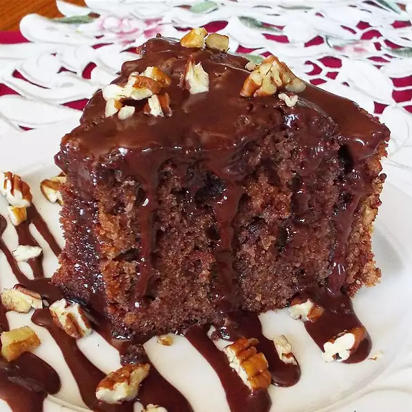

Cake

Description:
My grams made this cake when I was small and it has always been my mom's favorite cake. Best with fudge icing
Ingredients:
- 3 cups cake flour
- 2 teaspoons baking powder
- 1 (4 ounce) bar sweet chocolate, grated
- 1 cup chopped walnuts
- 1 cup butter
- 2 cups white sugar
- 4 eggs, beaten
- 1 teaspoon vanilla extract
- 1 cup milk
Steps:
- Preheat oven to 350 degrees F (175 degrees C). Grease and flour a 9x13 inch pan. Reserve 1 tablespoon of the cake flour.
Sift together remaining flour and baking powder. Set aside.
- Toss the chocolate and walnuts with reserved 1 tablespoon of flour. Set aside. In a large bowl, cream together the
butter and sugar until light and fluffy. Beat in the eggs one at a time, then stir in the vanilla. Beat in the flour
mixture alternately with the milk, mixing just until incorporated. Fold in the chocolate and walnuts.
- Pour batter into prepared pan. Bake in the preheated oven for 35 minutes, or until a toothpick inserted into the center
of the cake comes out clean. Allow to cool before frosting.